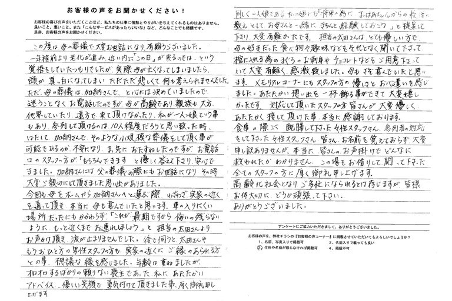

ご家族からのメッセージ
この度は母の葬儀で大変お世話になり有難うございました。
一年程前より老化が進み、近い内に「この日」が来るのでは・・・という覚悟をしていたつもりでいたが、実際に母が亡くなってしまいましたら、頭が真っ白になってしまい、ただただ悲しくて何も考えられませんでした。
ただ、母の葬儀は加納さんで、と心には決めていましたので迷うことなくお電話したのですが、母が高齢であり親族も大方他界していたり、遠方で来ていただけなかったり、私が一人っ娘という事もあり、参列して頂けるのは１０人程度だろうと思いいたったとき、はたして加納さんでそのような小規模な葬式をして頂く事が可能であるのか、不安になり真っ先におたずねしたのですが、お電話口のスタッフの方が「もちろんできます」と優しく答えて下さり安心できました。
加納さんには父の葬儀の際にもお世話になり、その時大変ご親切にして頂きました思い出がありました。
今回も母をホームから加納さんへは運ぶ際、わざわざ実家の近くを通って頂き本当に母も喜んでいたと思います。車の入りにくい場所だったにもかかわらず「これが最期ですから悔いの残らないようにもっと近くまでお連れしましょう」と担当の太田さんよりお声かけ頂き涙が止まりませんでした。後で伺うと太田さんやもうおひと方の男性スタッフの方も実家の近くにご縁のあられる方との事、不思議な縁を感じました。年齢は重ねましたが、オロオロするばかりの頼りない喪主であった私にあたたかいアドバイス、優しい笑顔で勇気付けて頂きました事厚く御礼申し上げます。
同じく一人娘である私の娘にも「将来の為に、おばあちゃんからの最後の教えとしてお母さんと一緒にきちんと経験しておこう」と提案して下さり、大変有難かったです。担当の太田さんは、とても優しい方で、母の好きだった食べ物や趣味などをそれとなく聞いて下さって、棺に入れる為のまぐろのお刺身やチョコレートなどをご用意下さっていて、大変有難く感激致しました。母もさぞ喜んでいたと思います。メモリアルコーナーにもスタッフの方の優しさとお心遣いを感じました。あたたかい想い出をいっぱい飾る事ができて大変嬉しかったです。対応していただいたスタッフの方々皆さんが大変優しくあたたかく接して頂けた事、本当に感謝しております。
食事の際に配膳して下さった女性スタッフさん、参列者の対応をして下さった女性スタッフさん、皆さんお名前を覚えておらず大変申し訳ありませんが、本当に皆さんのお声掛けでどんなに救われたかわかりません。この場をお借りして関わって下さった全てのスタッフの方に厚く御礼申し上げます。高齢化社会となりご多忙になられると存じますが、皆様お体大切にどうか頑張ってください。
ありがとうございました。
豊中市 M様
掲載アンケート
